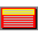

ENDEDIT - An ENDTEXT editor

ENDEDIT is a B800 text screen editor. Such screens were usually displayed when exiting Dos games.
Download latest version https://sourceforge.net/projects/endedit/files/latest/download
Project Page: https://sourceforge.net/projects/endedit/
Source Code Repository: https://github.com/jval1972/ENDEDIT
Main Application Window
The main application consists of the color palettes, the drawing tools, the text tools and the preview.
Color palettes
There are 2 color palettes:
The background color palette (8 colors). It controls the drawing tools color:
And the foreground color palette (16 colors). It controls the text color:
Drawing Tools
The drawing tools provide various ways to draw on the screen using common drawing tools such as free draw, line, floodfill, rectangle and eclipse.
There are 7 drawing tools:
The drawing tools affect the background of the screen.
- Free Draw
- Line
- Flood Fill
- Rectangle
- Filled Rectange
- Eclipse
- Filled Eclipse
The drawing tools can use the colors of the background color palette.
Text Tools
The text tools provide various ways to set the text on the screen.
There are 12 tools:
- Edit Text: Enters the editing mode, so you can write free text to the screen. You can also navigate to the screen using arrows, PGUP/PGDOWN and HOME/END keys
- Erase Text: Tool to delete text from screen
- Change Text Color: Changes the text color to the current color of the frontground color palette
- Special Character With Background: Changes the text color to the current color of the frontground color palette and the current background with the color of the background palette and the character to the special selected character
- Special Character Without Background: Changes the text color to the current color of the frontground color palette and the character to the special selected character
- Ascii Rectangle Drawing #1: Use special characters to draw a Rectangle with single horizontal and single vertical lines
- Ascii Rectangle Drawing #2: Use special characters to draw a Rectangle with double horizontal and single vertical lines
- Ascii Rectangle Drawing #3: Use special characters to draw a Rectangle with single horizontal and double vertical lines
- Ascii Rectangle Drawing #4: Use special characters to draw a Rectangle with double horizontal and double vertical lines
- Ascii Rectangle Drawing #5: Use special characters to draw a Rectangle with thick horizontal and thick vertical lines
- Blinking ON: Set text blinking
- Blinking OFF: Unset text blinking